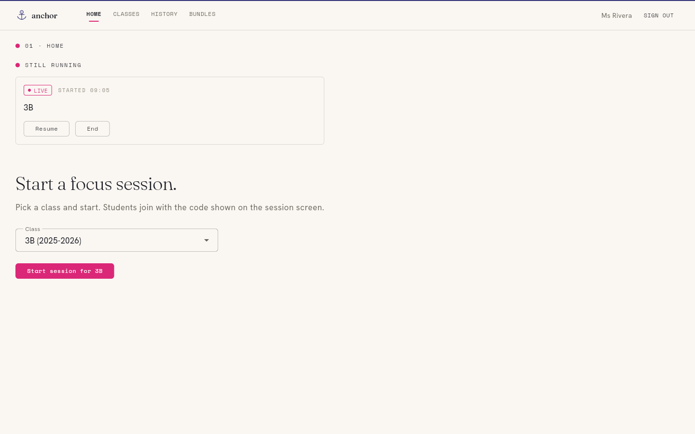
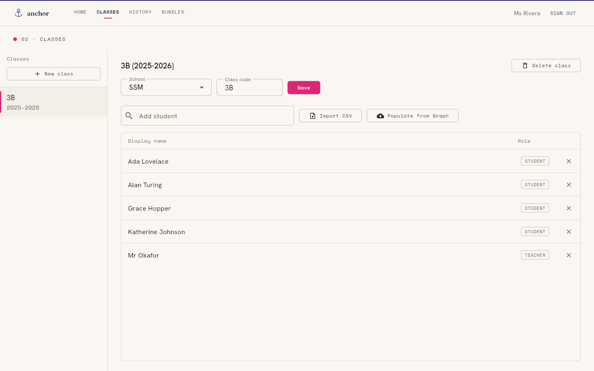
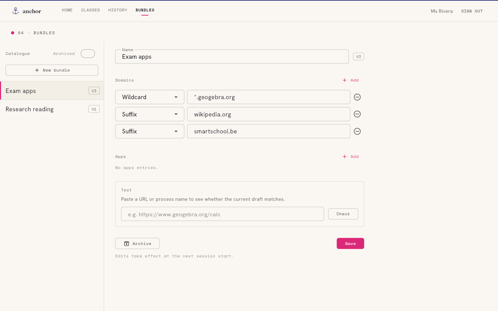
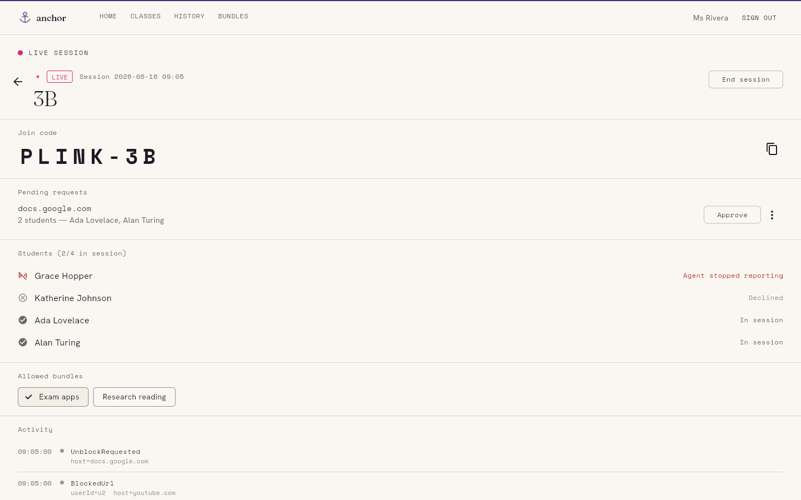
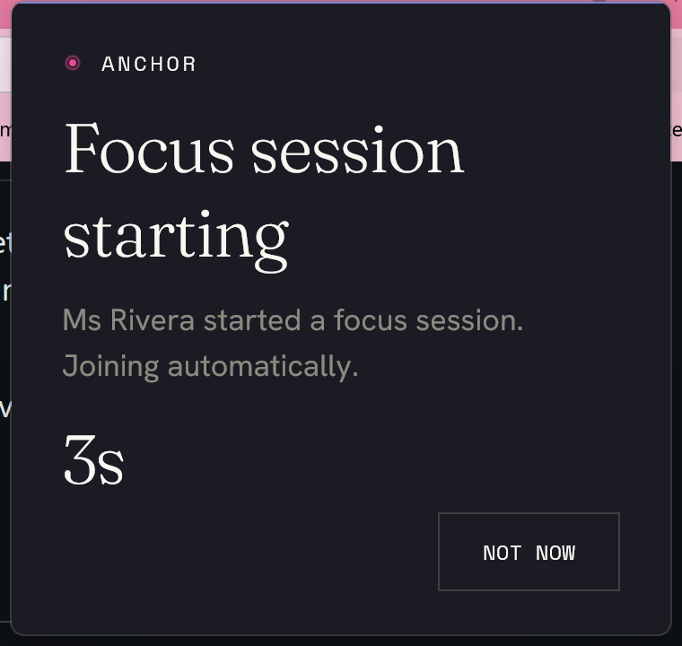
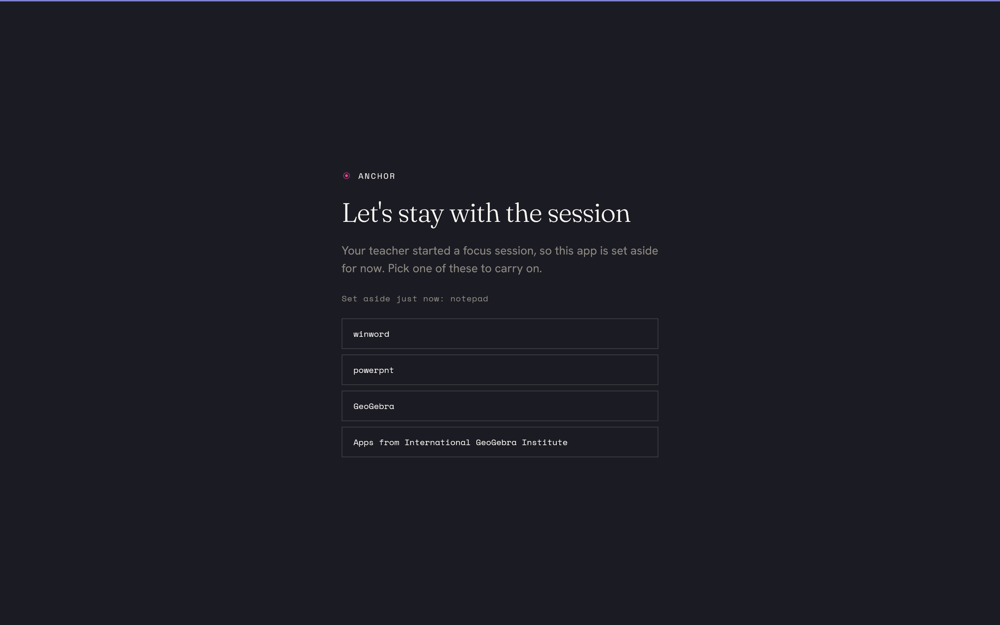
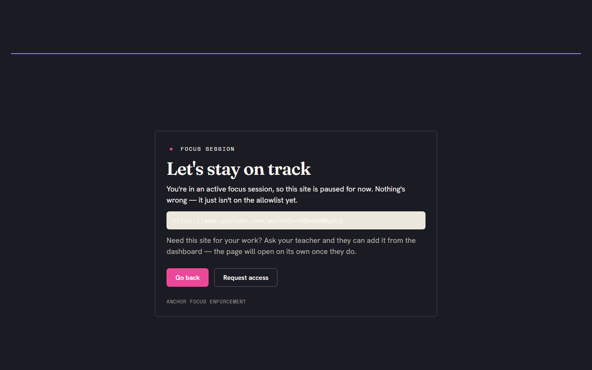
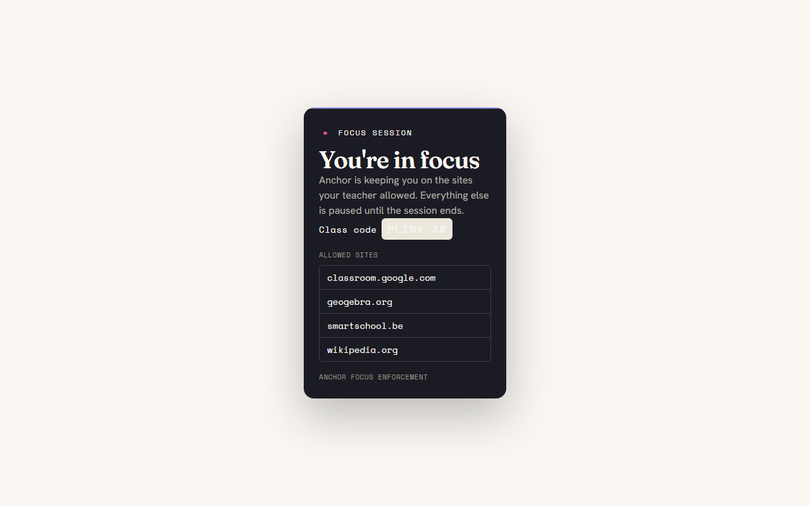

Anchor — for teachers
Run a focus session from start to finish.
Anchor puts you in control of one lesson at a time. You sign in, pick a class, and start a session; each student's device keeps to the apps and websites you allowed, and anything off task surfaces on your dashboard while it happens. Here is the whole flow, with the real screens you'll use.
Sign in, pick a class, start.
Everything a teacher does happens in the web dashboard — no install on your side, just a browser. The flow is short on purpose: sign in, pick a class, start, and keep an eye on the live view until you end it.
Sign in
Open the dashboard and sign in with your school Microsoft account. No separate Anchor password — it uses the account you already have.
Pick a class
Choose the class you're teaching from the dropdown. Anchor defaults to the class that matches your timetable, so most lessons it's already selected.
Start the session
One button — "Start session for 3B". Every signed-in student in that class is invited automatically; there's a join code on screen for anyone who needs to join by hand.
Choose the bundles
Add or remove the bundles this lesson needs — Microsoft 365, Smartschool, GeoGebra. Edits push to every device live; nobody has to rejoin.
Watch the live feed
The session view shows each student's state and a running events feed — joins, off-list pages, requests — as they happen, not as a report afterwards.
End the session
"End session" stops enforcement everywhere at once. Devices go back to normal, and Anchor stops observing. The lesson is over; so is Anchor's reach.




A note on the live view
It's a window into the lesson, not a record of it.
The events feed and student states are live — they exist so you can quietly nudge a student back on task in the moment, the way you'd glance around the room. When the session ends, the live view is gone. Anchor keeps a short session history so you can look back at the last few weeks, but it isn't a permanent dossier and it never follows a student home.
Calm on the student side, too.
There's no alarm, no lockout screen, no countdown of strikes — just a few gentle cues that a session is on and the device is keeping to the lesson. Here's every surface a student meets.
Join toast
When you start the session, a small notice slides in on each device: "Ms Rivera started a focus session. Joining automatically." A short countdown, and a "Not now" button — joining is the default, declining is allowed and visible to you.
App-block overlay
If a student opens an app that isn't on the allowlist, it's set aside — not closed — and a quiet full-screen card offers the allowed apps to carry on with instead. Nothing is lost; the off-list app is just paused.
Edge block page
In the browser, an off-list page shows a friendly "let's stay on track" page rather than an error. It explains the page just isn't on the allowlist yet, and offers a "Request access" button that pings your dashboard.
"You're in focus" popup
Clicking the extension shows a small reassurance: the session is on, here's the class code, and here are the sites that are allowed right now. No mystery about what's enforced.




It ends when the lesson ends.
Anchor is built for soft enforcement. It pulls focus back and makes off-task activity visible to you in the moment — it does not pretend to be tamper-proof, and a determined student can step around it. That's deliberate: the goal is to make drifting off task visible to a teacher, the way it already is in a physical room, not to wage a technical arms race against teenagers.
It only watches while you have a session running, only the off-list parts — on-allowlist work is never logged. Nothing is tracked between sessions. The moment you click "End session", Anchor stops observing and the devices go back to normal. No background monitoring, no location, no keystrokes, no screen recording, and the data that does exist stays inside the school that runs the backend — not with us.
Made by teachers, free for everyone.
Anchor is GPL-3.0 licensed and self-hostable. Your school runs its own backend; Plink Labs operates none and receives no student data. The full source — including exactly what each component collects — is public and auditable.